LECTURE 5 · PART II
Computer Vision for Self-Driving Cars
Finding Lane Lines: colour, regions, edges & the Hough transform
With practical implementation · Lab 5 & Assignment 2
Dr. Muhammad Kazim
Department of Intelligent Systems
University of Lahore
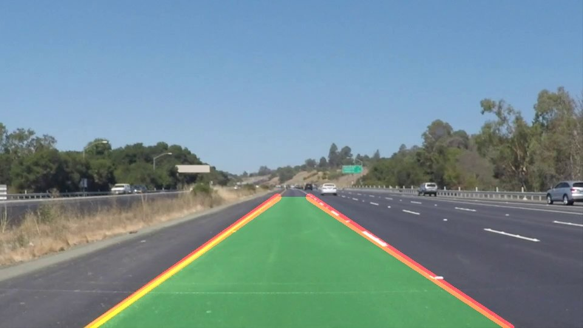
Where we are
From Part I to Part II: tools → a real application
Part I · you already know
- An image is an H × W × 3 array of numbers (0–255)
- Colour spaces: RGB, HSV / HLS, LAB, YCbCr
- Filters: averaging, Gaussian, median blur
- Edge detectors, shapes & contours in OpenCV
Part II · today we build
- A complete lane-finding pipeline for a car camera
- Colour selection and region-of-interest masks
- Canny edges — how they really work
- The Hough transform: from edge pixels to lines
- Lines → lanes → video, then Assignment 2
Recall the last slide of Part I — “Lane finding using LAB colour space”. Today we start from scratch and build our own lane finder, step by step.
Learning outcomes
By the end of this lecture and Lab 5 you should be able to:
- Explain where camera-based perception sits in a self-driving car and why lane finding is a first step.
- Select pixels by colour (RGB, and robustly in HLS) and restrict them to a region of interest.
- Describe the four stages of the Canny edge detector and choose its thresholds sensibly.
- Explain the Hough transform in both (m, b) and (ρ, θ) form and tune
cv2.HoughLinesP. - Turn line segments into two lane lines by averaging and extrapolating, and run the pipeline on video.
- Critically discuss the limits of this approach and what modern systems do instead.
Roadmap: one pipeline, built step by step
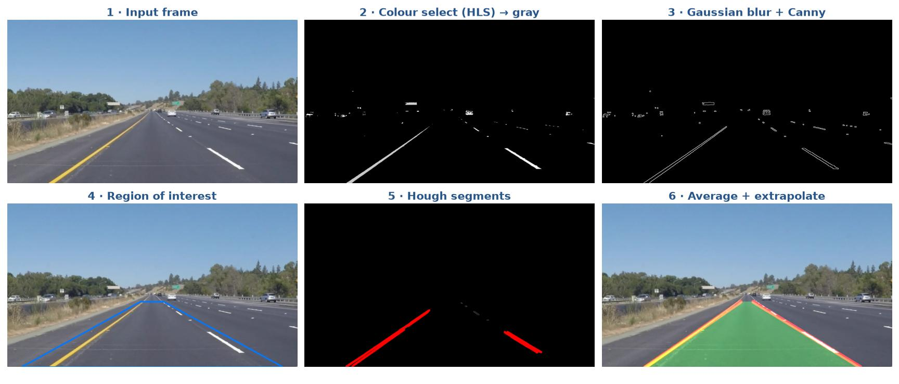
The pipeline you will have built by the end of the lab (generated with the reference solution on a Udacity test image).
01
Self-driving cars & computer vision
How does a car “see” the road?
You drive with your eyes …
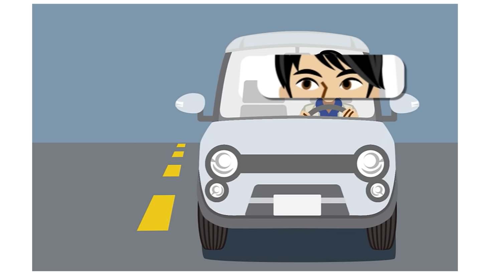
A human driver: eyes + brain
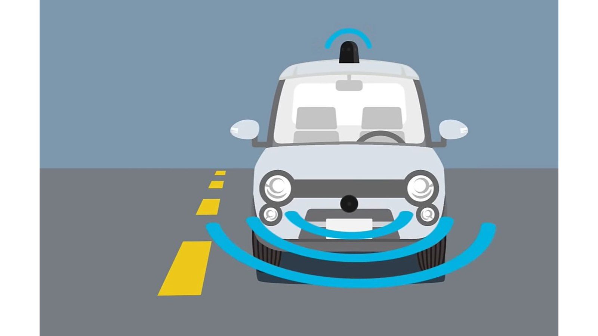
A self-driving car: cameras, radar, LiDAR + software
When we drive, we use our eyes to decide where to go. The lane lines on the road act as our constant reference for where to steer. One of the very first things a self-driving car must do is therefore detect the lane lines automatically — with an algorithm.
The self-driving software stack new
Perception = computer vision
Cameras are cheap, high-resolution and see colour & texture — the only sensor that can read lane paint, signs and traffic lights. Today: the lane-line part of perception.
Why lanes first?
Lane position tells the car where it is laterally (lane keeping), feeds lane-departure warning and lane-keeping assist found in many modern cars, and constrains planning.
Cameras, radar and LiDAR: complementary senses new
| Sensor | Measures | Strengths | Weaknesses |
|---|---|---|---|
| Camera | Light intensity & colour (2D image) | Cheap · high resolution · reads lane paint, signs, traffic lights | No direct depth · sensitive to glare, night, rain, fog |
| Radar | Range & relative speed (radio waves) | Works in bad weather · measures velocity directly | Low resolution · cannot see paint or colour |
| LiDAR | 3D point cloud (laser time-of-flight) | Accurate 3D shape & distance · works at night | Expensive · degraded by heavy rain/snow · no colour |
| GPS / IMU | Global position, acceleration, rotation | Absolute position · high-rate motion | Metre-level GPS error · drift · lost in tunnels |
Real vehicles fuse several sensors. Lane markings, however, are a visual feature — painted to be seen — so they are found with cameras.
The goal: find the lane lines in a camera frame
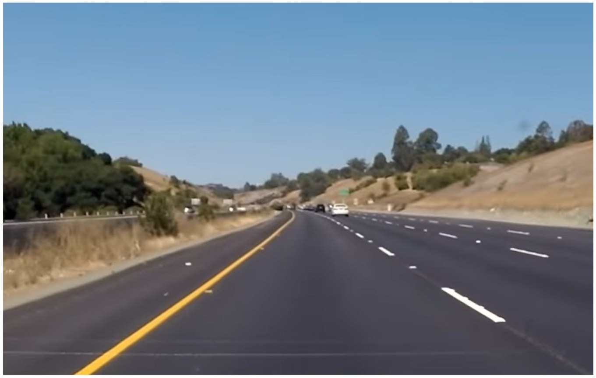
Input: a frame from a forward-facing camera
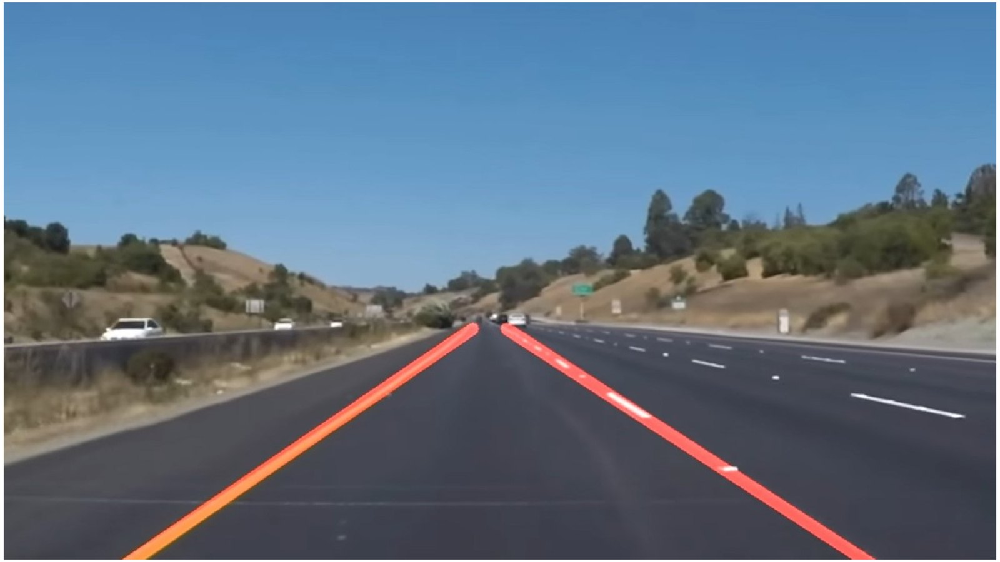
Output: the left and right lane lines, marked
Quiz: what makes a lane line a lane line?
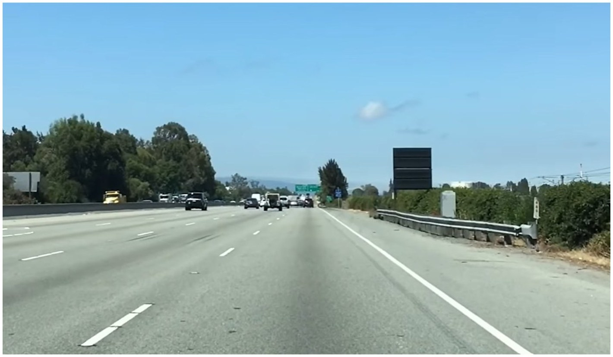
Quiz question
Which of these features could be useful in identifying lane lines on the road?
- ☐ Colour
- ☐ Shape
- ☐ Orientation
- ☐ Position in the image
02
Colour selection
Cue #1 — lane paint is bright white or yellow
Identifying lane lines by colour
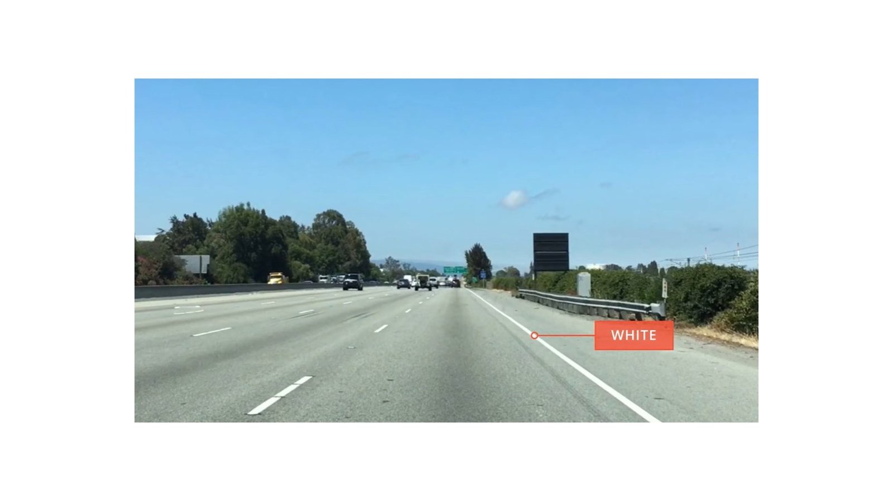
The lane lines here are white. So what is “white” to a computer?
- A colour image has three channels: Red, Green, Blue.
- Each channel is 8 bits → values from 0 (dark) to 255 (bright).
- White is bright in all three channels.
So: keep pixels that are bright in R, G and B; black out the rest.
An image is three stacked channels
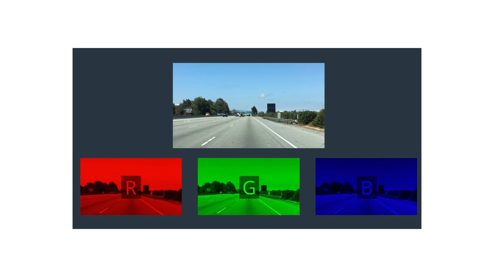
The road image split into its R, G and B channels
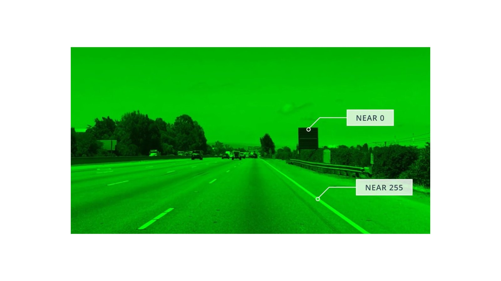
In each channel: dark pixels ≈ 0, bright pixels ≈ 255
Quiz: what is pure white?
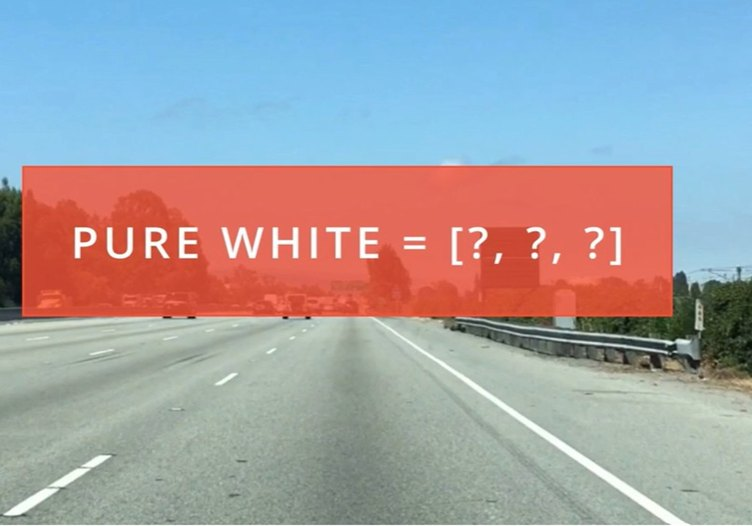
Quiz question
What colour is pure white in our combined [R, G, B] image?
- [0, 0, 0]
- [0, 255, 255]
- [100, 150, 200]
- [255, 255, 255]
Tutorial · step 1 of 3
Coding up a colour selection: read the image
import matplotlib.pyplot as plt
import matplotlib.image as mpimg
import numpy as np
# Read in the image and print out some stats
image = mpimg.imread('test.jpg')
print('This image is:', type(image),
'with dimensions:', image.shape) # (540, 960, 3)
# Grab the x and y size and make a copy of the image
ysize = image.shape[0]
xsize = image.shape[1]
# Note: always make a copy rather than simply using "="
color_select = np.copy(image)
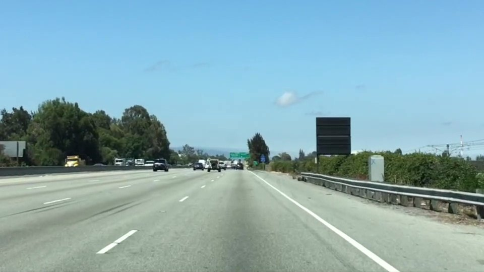
Always copy! a = b does not copy a NumPy array — both names point to the same data, so blacking out pixels in one destroys the other.
Watch the dtype: mpimg.imread gives uint8 0–255 for .jpg but float32 0–1 for .png.
Tutorial · step 2 of 3
Define thresholds and black out the rest
# Define our colour selection criteria: the MINIMUM R, G, B values we allow
red_threshold = 0
green_threshold = 0
blue_threshold = 0
rgb_threshold = [red_threshold, green_threshold, blue_threshold]
# Identify pixels BELOW the threshold in ANY channel (boolean OR "|")
thresholds = (image[:,:,0] < rgb_threshold[0]) \
| (image[:,:,1] < rgb_threshold[1]) \
| (image[:,:,2] < rgb_threshold[2])
color_select[thresholds] = [0, 0, 0] # black them out
# Display the image
plt.imshow(color_select)
plt.show()
thresholds is a boolean mask of shape (540, 960) — True where a pixel fails. Indexing with it changes all failing pixels at once: no loops.
With all thresholds at 0, nothing fails: every pixel is kept. Your job is to find better values …
Tutorial · step 3 of 3 · live demo
Try it: tune the RGB thresholds
Kept: 100% of pixels
Quiz: retain the lane lines, drop everything else
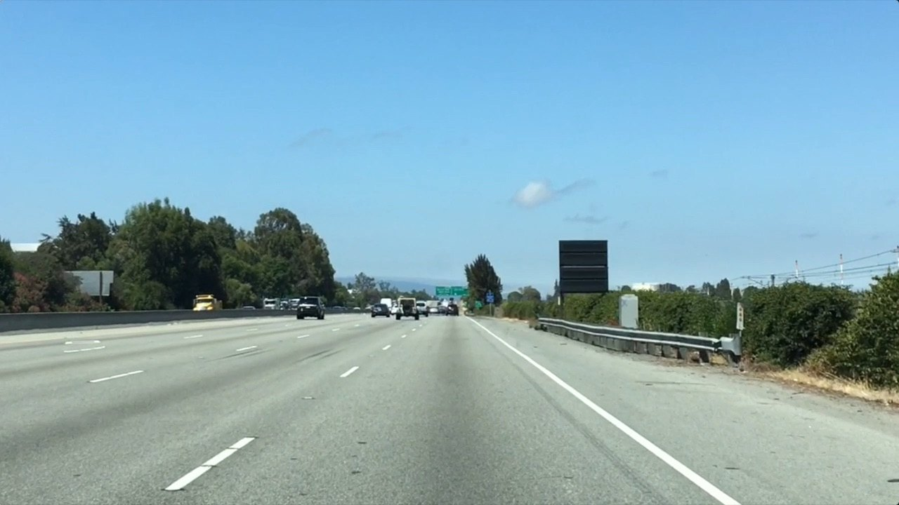
Original
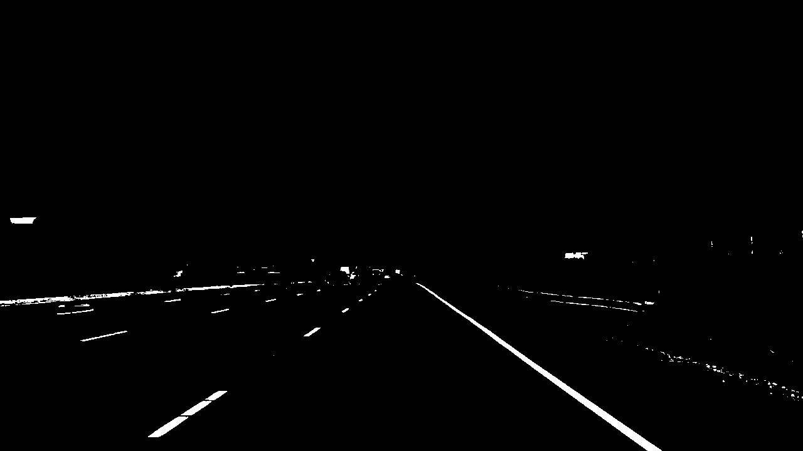
Colour selection applied
red_threshold = green_threshold = blue_threshold = 200 the lane lines are clearly visible and almost everything else is black. But some pixels around the periphery (horizon, cars, signs) survive, so it is still hard to extract the lines automatically …Why fixed RGB thresholds break improved
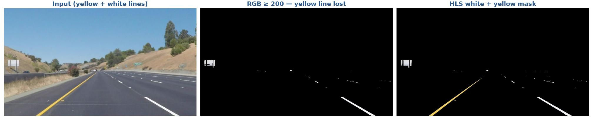
The problem
- Yellow paint has high R and G but low B → RGB ≥ 200 throws it away.
- Shadows, dusk and dirty paint push white below 200.
The fix (from Part I!)
Use a colour space that separates brightness from hue: in HLS, white = high L; yellow = hue ≈ 30–70° with high S.
hls = cv2.cvtColor(img, cv2.COLOR_RGB2HLS)
white = cv2.inRange(hls, (0, 200, 0), (180, 255, 255))
yellow = cv2.inRange(hls, (15, 30, 115), (35, 204, 255))
mask = cv2.bitwise_or(white, yellow)
03
Region of interest masking
Cue #2 — lane lines always appear in the same part of the image
Only look where the lane can be
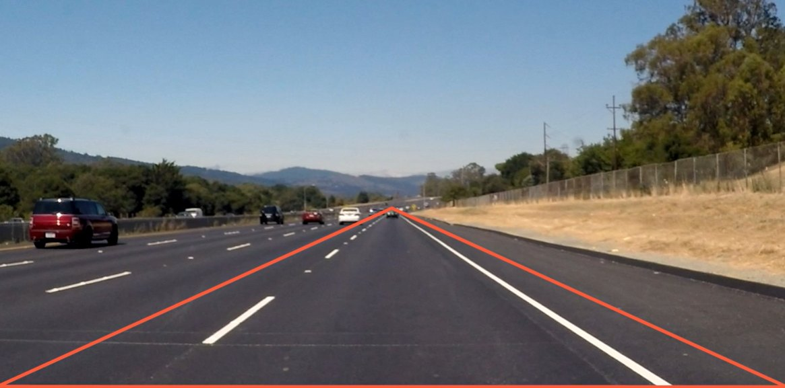
The camera is fixed to the car, so the lane is always inside this region …
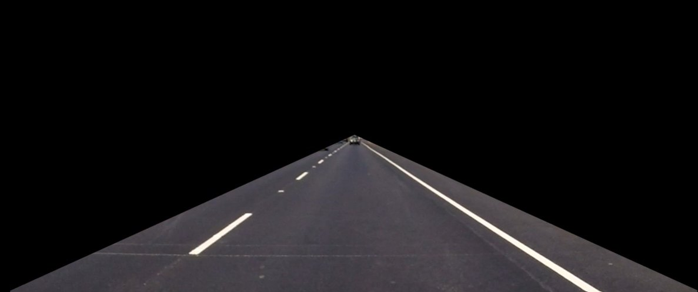
… so we mask out everything else
We assume the front-facing camera is mounted in a fixed position. Then the lane lines always appear in the same general region, and we only consider pixels for colour selection inside it. Here a triangle (simplest case); later a quadrilateral; in principle any polygon.
Tutorial · region of interest
Coding up a triangular region mask
region_select = np.copy(image)
# Triangle vertices. Origin (0, 0) is the TOP-LEFT corner!
left_bottom = [0, 539]
right_bottom = [900, 300] # not sensible yet: tune in the quiz
apex = [400, 0]
# Fit lines y = A x + B through each pair of vertices
fit_left = np.polyfit((left_bottom[0], apex[0]),
(left_bottom[1], apex[1]), 1)
fit_right = np.polyfit((right_bottom[0], apex[0]),
(right_bottom[1], apex[1]), 1)
fit_bottom = np.polyfit((left_bottom[0], right_bottom[0]),
(left_bottom[1], right_bottom[1]), 1)
# Coordinates of every pixel, then test "inside the triangle"
XX, YY = np.meshgrid(np.arange(0, xsize), np.arange(0, ysize))
region_thresholds = (YY > (XX*fit_left[0] + fit_left[1])) & \
(YY > (XX*fit_right[0] + fit_right[1])) & \
(YY < (XX*fit_bottom[0] + fit_bottom[1]))
region_select[region_thresholds] = [255, 0, 0] # paint it red
plt.imshow(region_select)
How it works
np.polyfit(xs, ys, 1)returns [A, B] of the line through two points.np.meshgridgives the x and y of every pixel as two arrays.- Inside = below both slanted sides (larger y) and above the bottom side.
- Three boolean arrays combined with AND
&→ one mask.
Image coordinates: x → right, y ↓ down. Think of an image as a matrix: element (0, 0) is the top-left.
Combining colour and region selections
# colour test: True where a pixel is too dark in any channel
color_thresholds = (image[:,:,0] < rgb_threshold[0]) | \
(image[:,:,1] < rgb_threshold[1]) | \
(image[:,:,2] < rgb_threshold[2])
# Mask colour AND region selection
color_select[color_thresholds | ~region_thresholds] = [0, 0, 0]
# Paint pixels red where BOTH the colour and region selections are met
line_image[~color_thresholds & region_thresholds] = [255, 0, 0]
A pixel is a lane pixel only if it passes the colour test and lies inside the region: ~color_thresholds & region_thresholds.
Colour + region: the result
Original
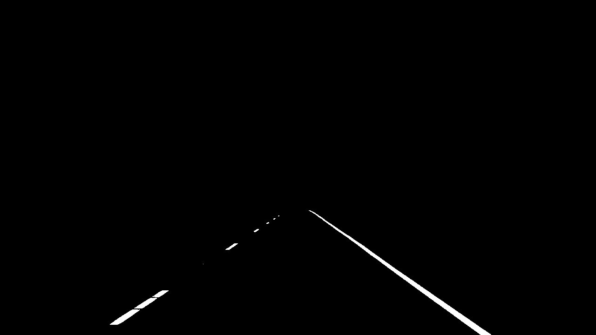
Region + colour selection
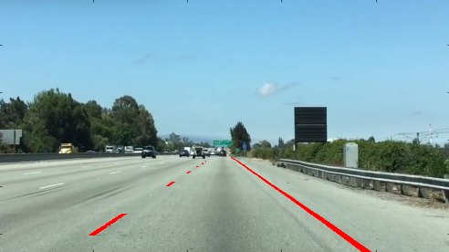
Lane pixels identified
Quiz: choose the triangle
Quiz
The colour thresholds are given (200, 200, 200). Modify left_bottom, right_bottom and apex so that only the lane lines are picked out.
Use the live demo two slides back (tick “region”) or Lab 5B.
left_bottom = [0, 539], right_bottom = [900, 539], apex = [475, 320] — a triangle that hugs the lane and cuts off the horizon.In practice: any polygon with cv2.fillPoly improved
def region_of_interest(img, vertices):
mask = np.zeros_like(img) # black canvas
fill = (255,) * img.shape[2] if img.ndim == 3 else 255
cv2.fillPoly(mask, vertices, fill) # white polygon
return cv2.bitwise_and(img, mask) # keep inside
h, w = image.shape[:2]
# trapezoid as FRACTIONS of the size -> works at any resolution
vertices = np.array([[(0.05*w, h), (0.46*w, 0.6*h),
(0.54*w, 0.6*h), (0.95*w, h)]], dtype=np.int32)
masked = region_of_interest(image, vertices)
- Shorter, faster and works for any shape.
- Same function masks colour images or edge maps.
- Use relative vertices: the Udacity challenge video is 1280×720, not 960×540.
A fixed region is an assumption: it fails on hills, sharp curves, lane changes, or if the camera moves.
So … are we ready to drive?

We found the lane lines — simple, right? Ready to upload to the car and drive autonomously? Not quite yet.
- Lane lines are not always the same colour.
- Even lines of the same colour look different day vs night, in shade or rain.
- We still have pixels, not lines a car can steer by.
We need shape: detect lines of any colour with computer vision — edges (Canny) and lines (Hough).
04
Canny edge detection
Cue #3 — lane lines are where brightness changes sharply
The goal: find the boundaries of objects
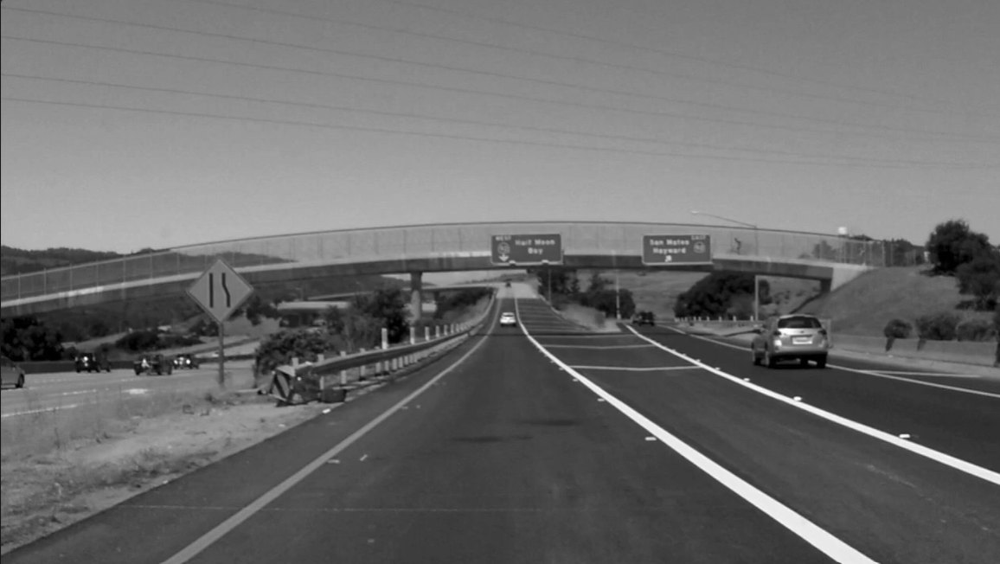
1 · Convert to grayscale
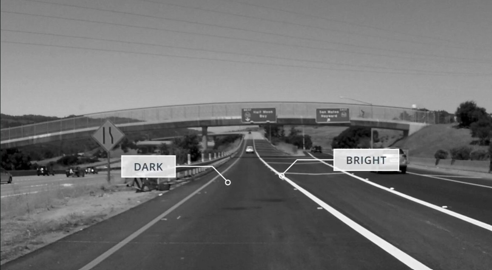
2 · Dark road next to bright paint …
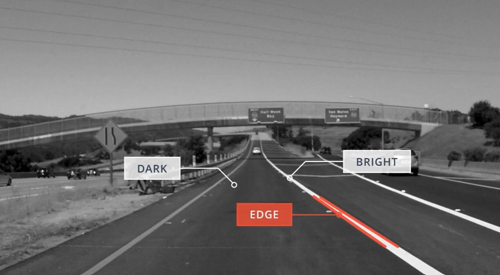
3 · … the boundary between them is an edge
The Canny detector was developed by John F. Canny in 1986. Idea: convert to grayscale, compute the gradient (how fast brightness changes), then trace out the pixels that follow the strongest gradients. By identifying edges we can detect objects by their shape — regardless of their colour.
An image is a function, so we can differentiate it
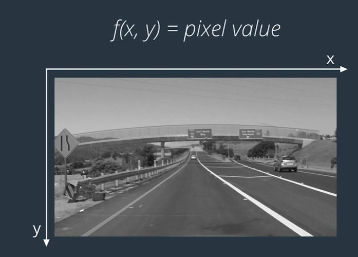
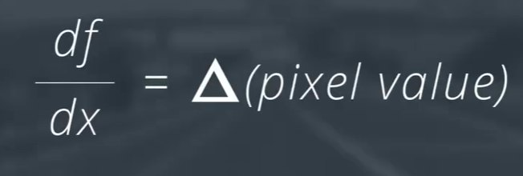
- A grayscale image is a function \(f(x, y)\) = pixel value.
- Its derivative measures change: small derivative = small change, big derivative = big change.
- In 2D we differentiate in x and y simultaneously: the gradient.
\[ \nabla f = \left(\frac{\partial f}{\partial x},\; \frac{\partial f}{\partial y}\right) \qquad |\nabla f| = \sqrt{\left(\tfrac{\partial f}{\partial x}\right)^2 + \left(\tfrac{\partial f}{\partial y}\right)^2} \qquad \theta = \operatorname{atan2}\!\left(\tfrac{\partial f}{\partial y}, \tfrac{\partial f}{\partial x}\right) \]
Magnitude = edge strength; direction θ is perpendicular to the edge; estimated with Sobel kernels (Part I).
The gradient image: thick edges
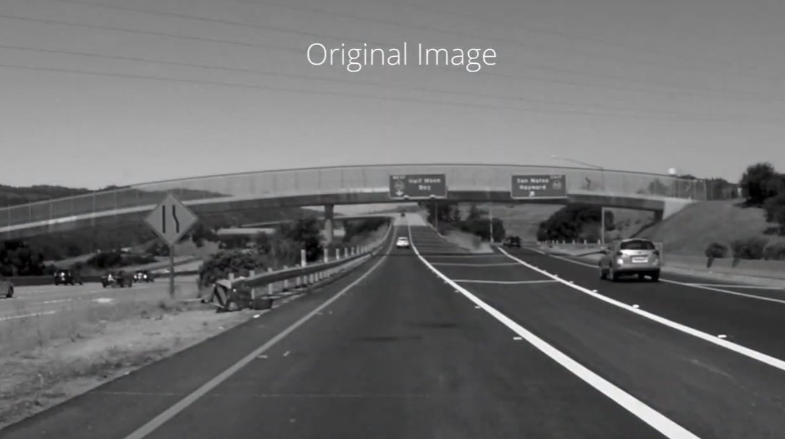
Original image
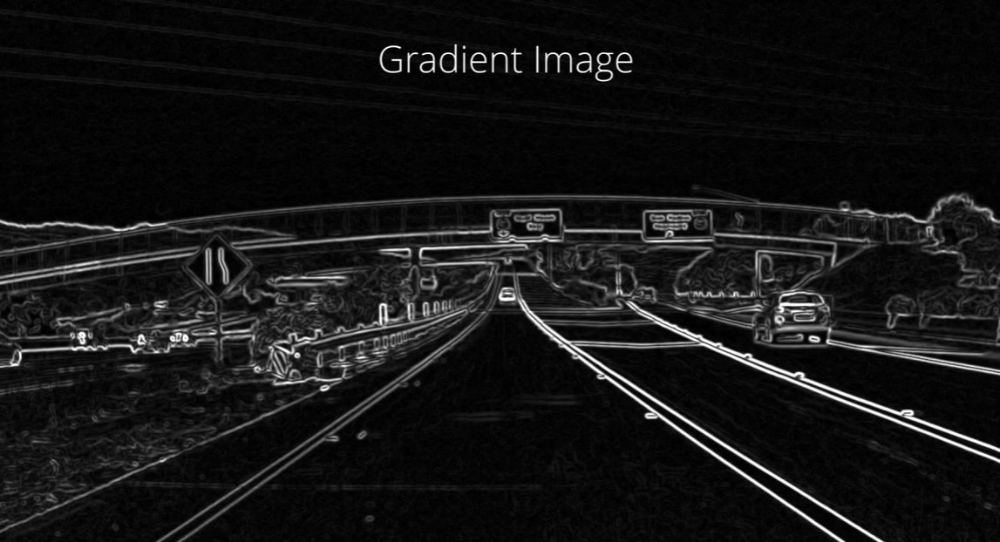
Gradient image — brightness = strength of the gradient
Rapid changes in brightness are where we find the edges. Computing the gradient gives thick edges, though …
Canny thins the edges, then extends them
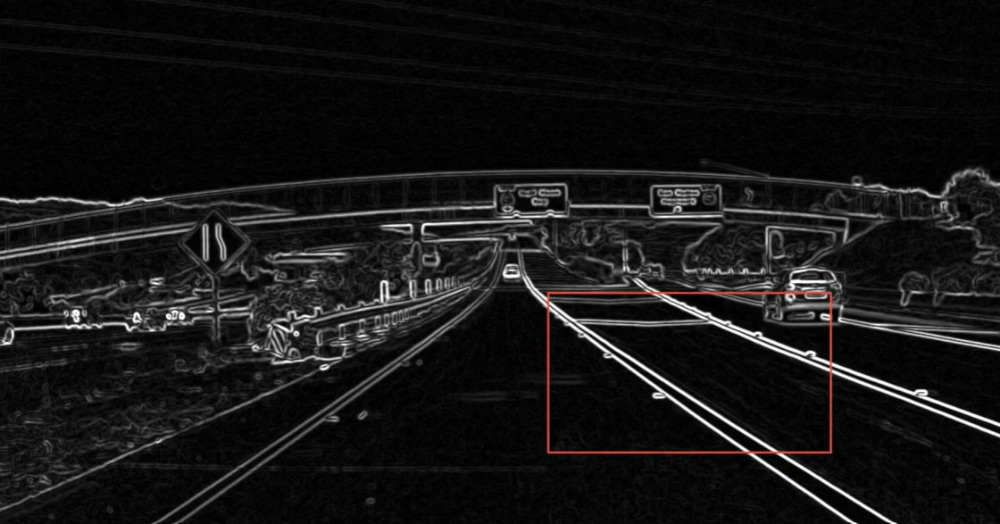
Zoom into the lane lines …
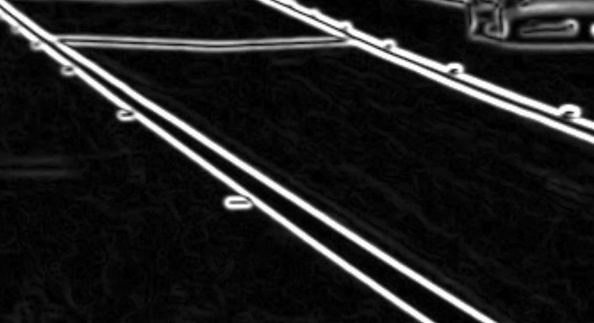
… the gradient ridges are thick
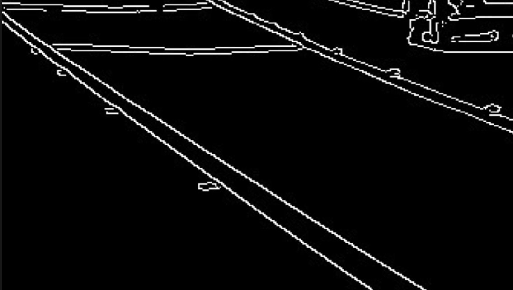
Canny keeps only the 1-pixel ridge
Canny thins the edges to the individual pixels that follow the strongest gradients, then extends those strong edges to include pixels down to a lower threshold — as long as they are connected.
Under the hood: the four stages of Canny new
- Smooth with a Gaussian to suppress noise: \(G_\sigma(x,y)=\tfrac{1}{2\pi\sigma^2}e^{-(x^2+y^2)/2\sigma^2}\)
- Gradient magnitude & direction (Sobel \(G_x, G_y\)).
- Non-maximum suppression: keep a pixel only if it is the maximum along the gradient direction → 1-pixel-thin ridges.
- Hysteresis (double threshold):
- >
high→ strong edge ✔ - <
low→ rejected ✘ - in between → kept only if connected to a strong edge
- >
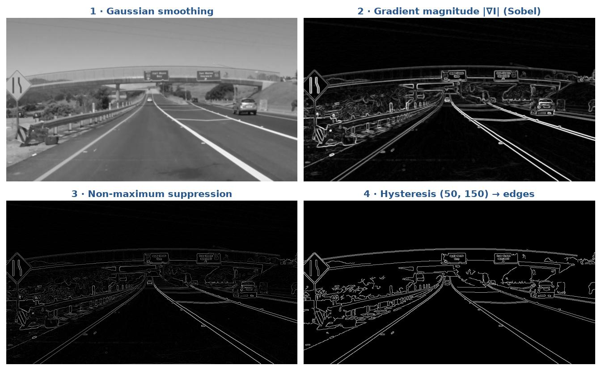
Quiz: where are the strong edges?
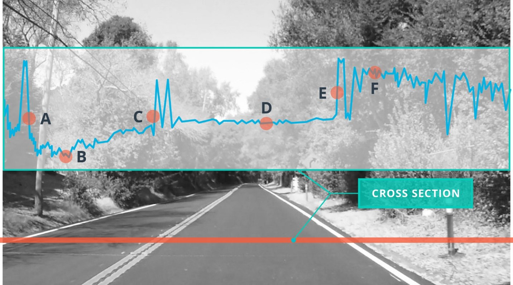
Quiz question
The red line shows where we took a cross-section through the image. The wiggles in the blue line are the changes in intensity along it. At which letters do you expect strong edges?
A · B · C · D · E · F
Tutorial · Canny edges
Canny edge detection in action
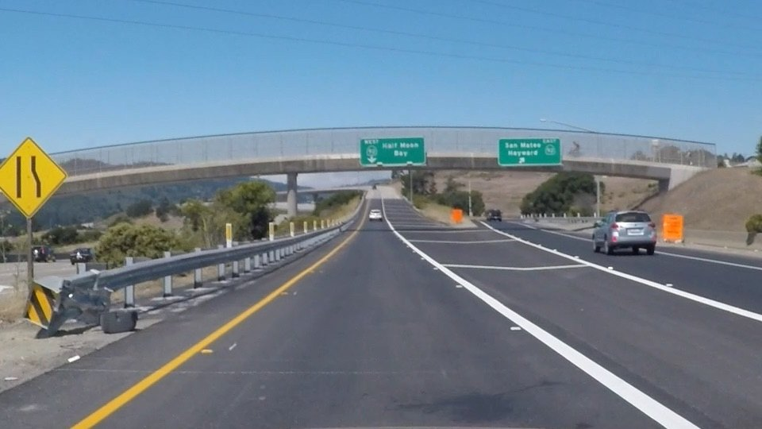
exit-ramp.jpg
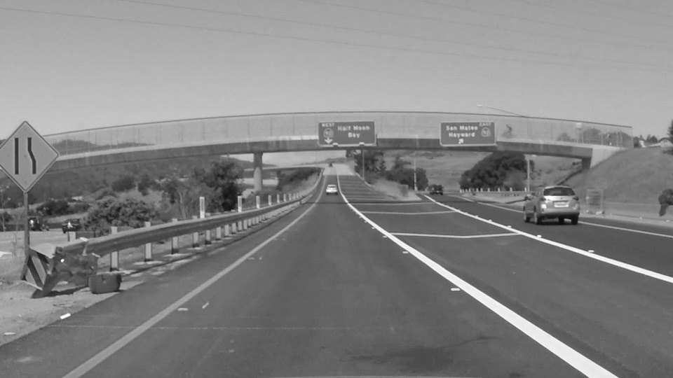
cv2.cvtColor(image, cv2.COLOR_RGB2GRAY)
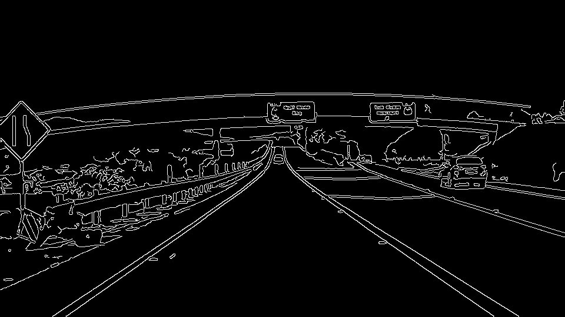
cv2.Canny(blur_gray, 50, 150)
edges = cv2.Canny(gray, low_threshold, high_threshold)
- Pixels above
high_thresholdare strong edges; belowlow_thresholdare rejected; in between are kept if connected to strong edges. - Output
edgesis a binary image: white pixels trace the edges, black everywhere else. (OpenCV Canny docs)
Choosing the parameters
Thresholds
- Grayscale is 8-bit: \(2^8 = 256\) values, 0–255.
- So pixel-to-pixel differences (derivatives) are in the tens to hundreds → thresholds too.
- John Canny recommended a low : high ratio of 1:2 or 1:3.
Gaussian smoothing first
cv2.GaussianBlur(gray, (k, k), 0)suppresses noise and spurious gradients by averaging.kmust be odd (3, 5, 7 …); larger = smoother.
Correction to the original lesson. The Udacity notes say cv2.Canny() “applies a 5×5 Gaussian internally”. It does not: OpenCV's Canny computes Sobel derivatives directly (apertureSize=3) with no smoothing. That is precisely why the explicit cv2.GaussianBlur step matters.
The code
import matplotlib.pyplot as plt
import matplotlib.image as mpimg
import numpy as np
import cv2
# Read in the image and convert to grayscale
image = mpimg.imread('exit-ramp.jpg')
gray = cv2.cvtColor(image, cv2.COLOR_RGB2GRAY)
# Gaussian smoothing / blurring (kernel size must be odd)
kernel_size = 5
blur_gray = cv2.GaussianBlur(gray, (kernel_size, kernel_size), 0)
# Canny with a 1:3 low:high ratio
low_threshold = 50
high_threshold = 150
edges = cv2.Canny(blur_gray, low_threshold, high_threshold)
plt.imshow(edges, cmap='Greys_r')
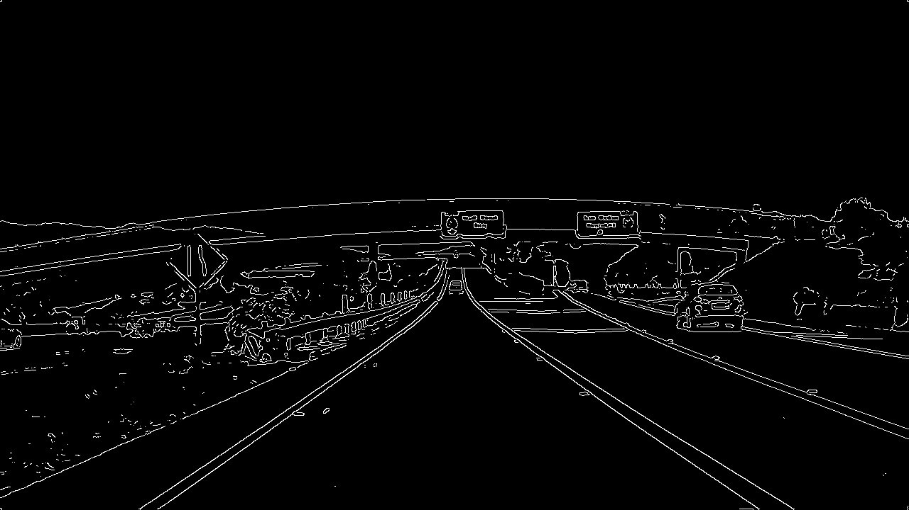
Lane lines kept, most other clutter removed
Live demo
Explore: Canny thresholds on exit-ramp.jpg
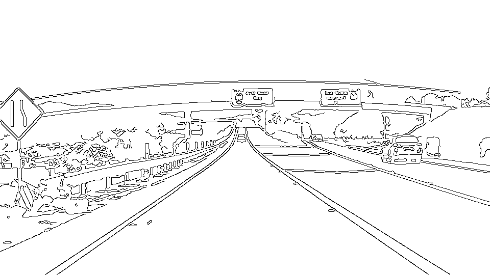
low = 40, high = 120
Gaussian blur 5×5 applied first. Edges drawn black on white.
Too low → texture, trees and signs everywhere. Too high → the lane lines start to break up. Hysteresis is what keeps a faint section that is connected to a strong one.
05
The Hough transform
From a cloud of edge pixels to straight lines
We have edges — but we want lines
Image
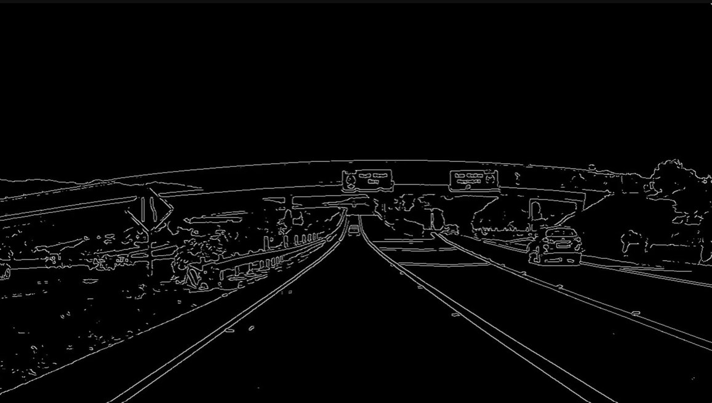
Canny edges: just dots that happen to be lined up
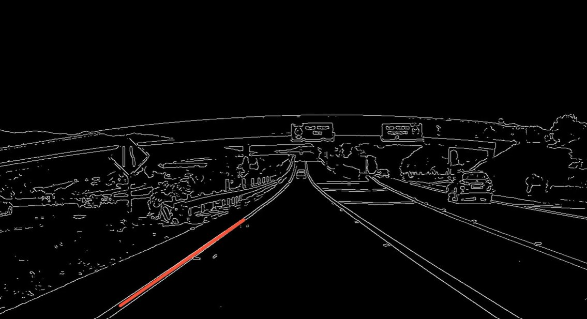
Goal: connect the dots into a line
To find lines we need a model of a line, and a way to find which edge pixels fit it. In 1962 Paul Hough devised a method for representing lines in parameter space — “Hough space” in his honour.
A line in image space is a point in Hough space
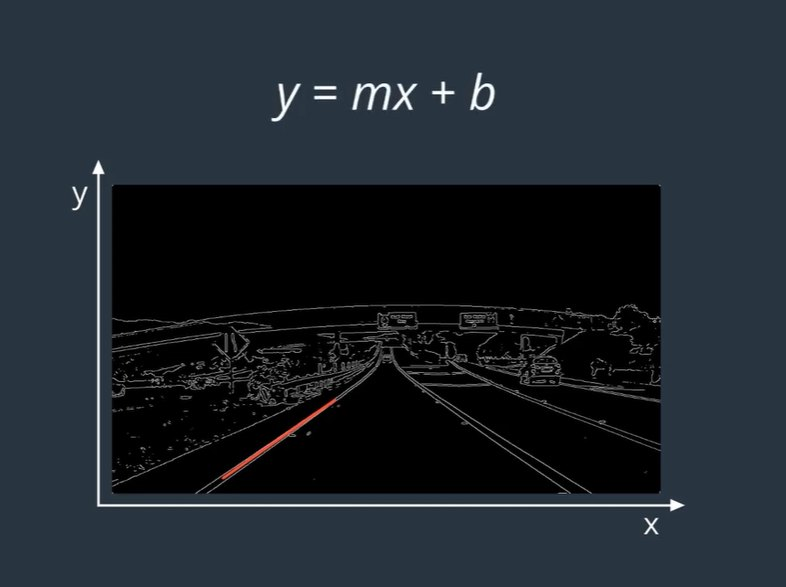
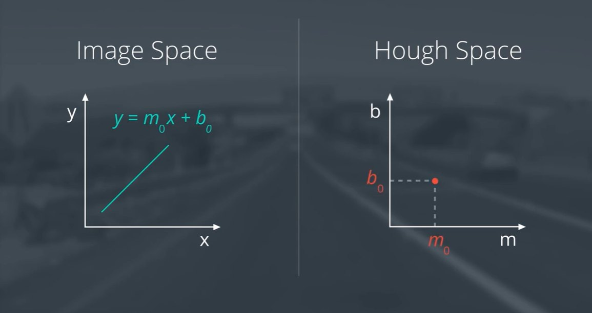
A line \(y = m_0x + b_0\) is fully described by two numbers, \((m_0, b_0)\). Plot m horizontally and b vertically: the whole line becomes a single point. The Hough transform is just the conversion from image space to Hough space.
Hough quiz 1 of 5
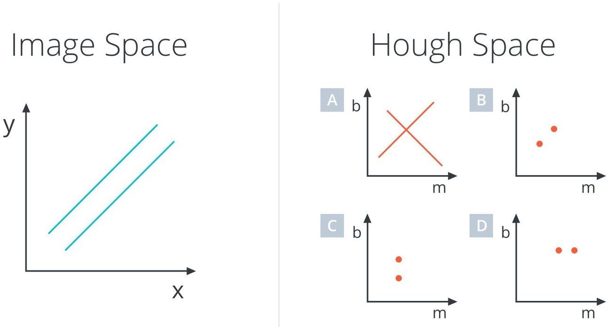
Question
If a line is a point in Hough space, what will two parallel lines in image space be?
Hough quiz 2 of 5
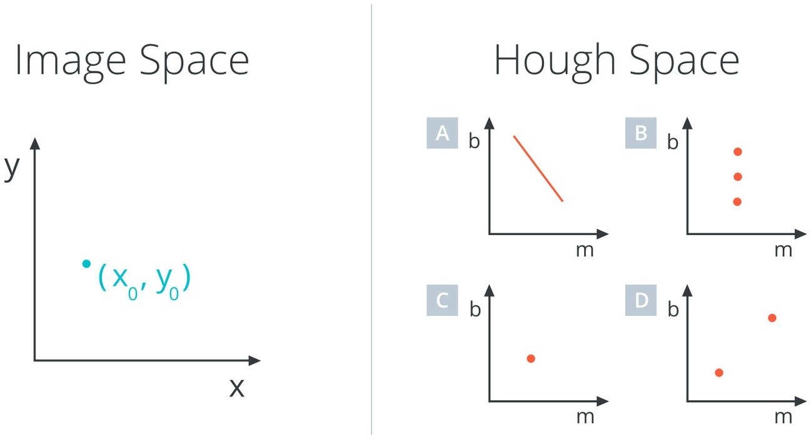
Question
What does a point \((x_0, y_0)\) in image space correspond to in Hough space?
Hough quiz 3 of 5
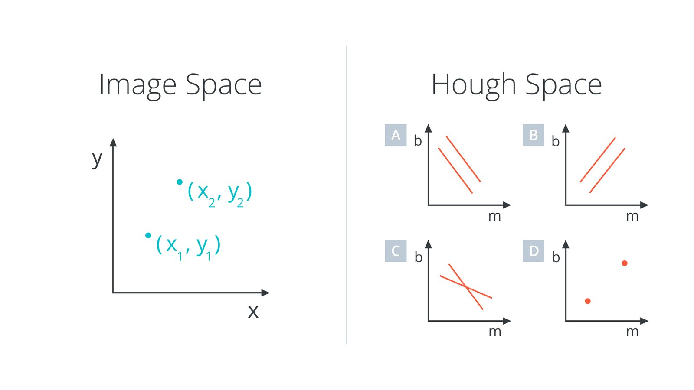
Question
What is the representation in Hough space of two points in image space?
Hough quiz 4 of 5
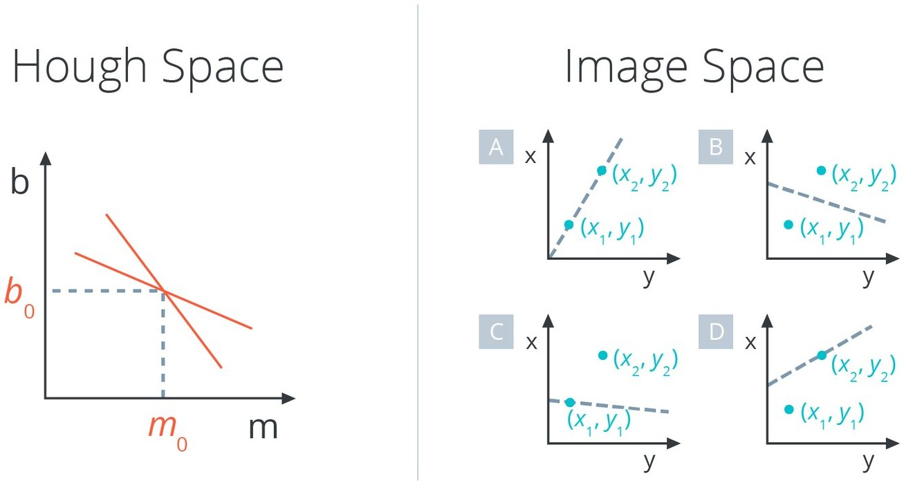
Question
What does the intersection point \((m_0, b_0)\) of the two lines in Hough space correspond to in image space?
Strategy: let every edge pixel vote
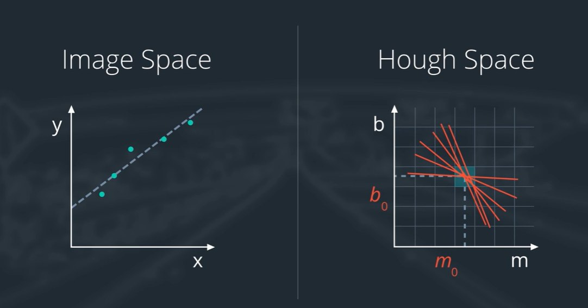
- Run Canny to get all edge points.
- Each edge point becomes a line in Hough space.
- Divide Hough space into a grid (the accumulator); every line adds a vote to each cell it passes through.
- Cells where many lines intersect (many votes) are lines in image space.
Problem: vertical lines have infinite slope — m cannot represent them.
The fix: polar coordinates (ρ, θ)
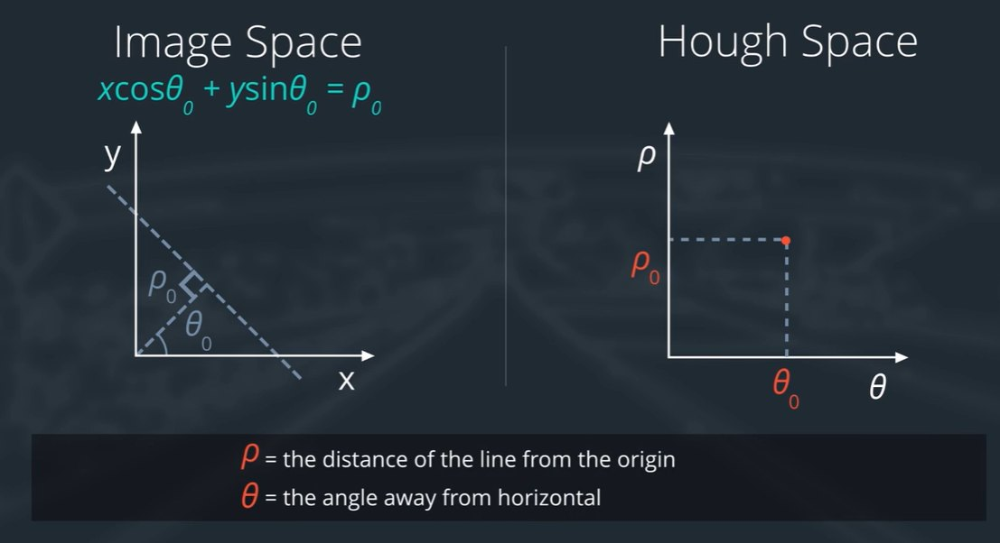
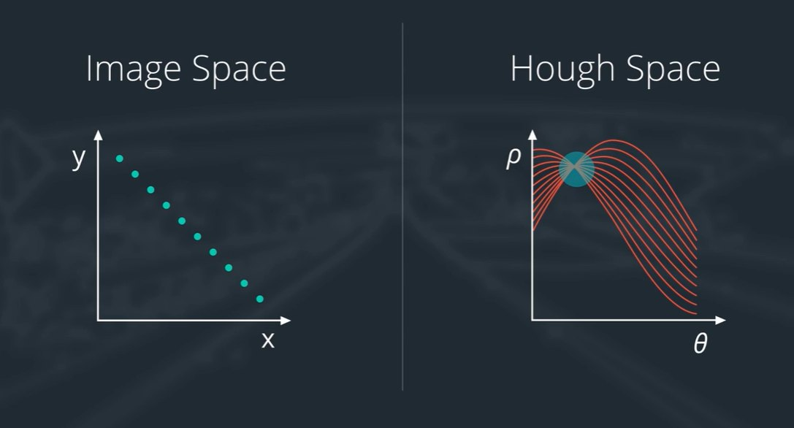
\[ \rho = x\cos\theta + y\sin\theta \qquad \rho:\text{ distance from origin},\quad \theta:\text{ angle of the normal} \]
Every line — including vertical ones — has a finite (ρ, θ). Each point in image space now becomes a sinusoid; a line of points becomes many sinusoids that intersect at one (ρ, θ).
Hough quiz 5 of 5
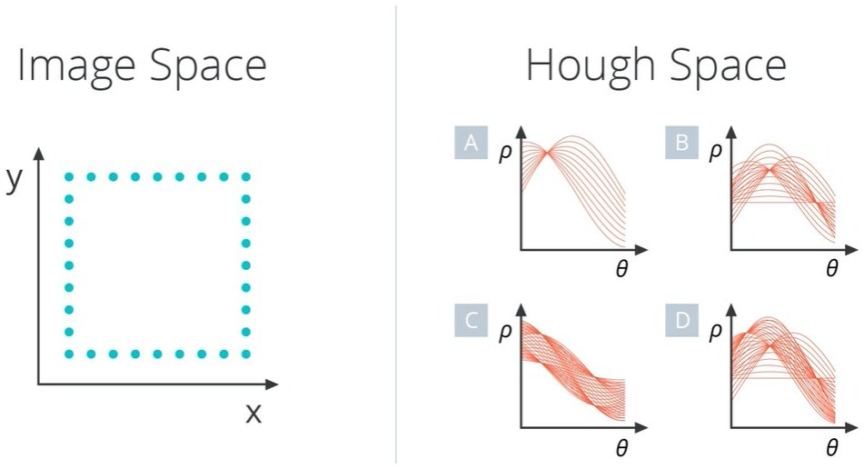
Question
What happens if we run a Hough transform on an image of a square? What will the plot in Hough space look like?
Live demo
Play with Hough space
Image space — click to add points
Hough space (θ 0→180°, ρ ↓): one sinusoid per point; the circled peak is drawn back as the red line
On a real road: two peaks = two lane lines new
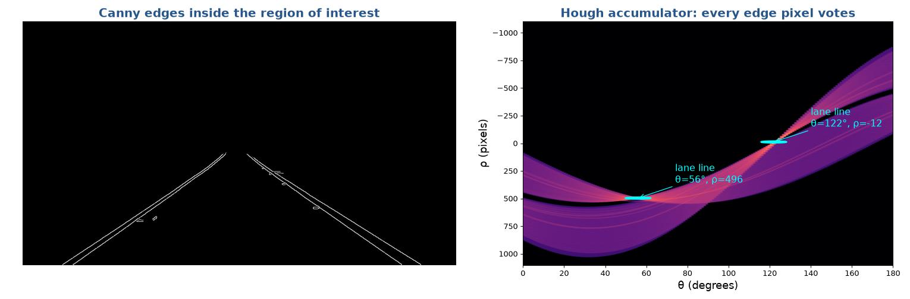
The masked Canny edges of exit-ramp.jpg voted into a (θ, ρ) accumulator (log scale). The two brightest cells are the left and right lane lines — everything else in the image left only a faint trace.
Tutorial · Hough lines
cv2.HoughLinesP: the parameters
lines = cv2.HoughLinesP(masked_edges, rho, theta, threshold, np.array([]),
min_line_length, max_line_gap)
| Parameter | Meaning | Start with |
|---|---|---|
masked_edges | Input: the binary output of Canny (after the region mask) | — |
rho | Distance resolution of the Hough grid, in pixels | 1–2 |
theta | Angular resolution of the grid, in radians | np.pi/180 (1°) |
threshold | Minimum number of votes (intersections in a grid cell) for a line | 10–30 |
np.array([]) | Placeholder for the optional output array — no need to change it | — |
min_line_length | Shortest line segment (pixels) accepted in the output | 20–50 |
max_line_gap | Largest gap (pixels) between segments that are joined into one line | 5–30 |
Output: an array of segments [[x1, y1, x2, y2]], … — or None if nothing is found. Tip: keyword arguments (minLineLength=…, maxLineGap=…) avoid the placeholder entirely.
Putting Canny and Hough together
# Canny (as before)
blur_gray = cv2.GaussianBlur(gray, (5, 5), 0)
edges = cv2.Canny(blur_gray, 50, 150)
# Hough transform parameters
rho = 1 # distance resolution (pixels)
theta = np.pi/180 # angular resolution (radians)
threshold = 1 # min votes
min_line_length = 10 # min pixels in a line
max_line_gap = 1 # max gap between segments
line_image = np.zeros_like(image) # blank to draw on
lines = cv2.HoughLinesP(edges, rho, theta, threshold,
minLineLength=min_line_length,
maxLineGap=max_line_gap)
# Draw every segment on the blank
if lines is not None:
for x1, y1, x2, y2 in lines.reshape(-1, 4):
cv2.line(line_image, (x1, y1), (x2, y2), (255, 0, 0), 10)
# Overlay on a 3-channel version of the edge image
color_edges = np.dstack((edges, edges, edges))
combo = cv2.addWeighted(color_edges, 0.8, line_image, 1, 0)
plt.imshow(combo)
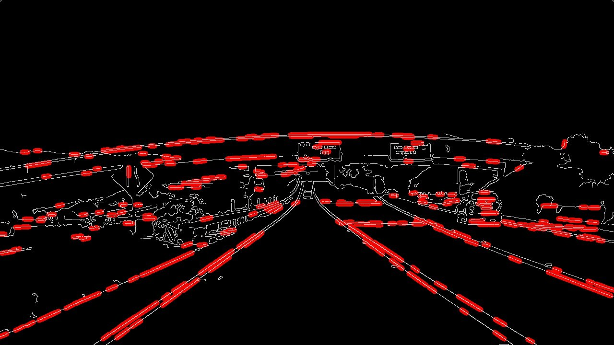
Lots of line segments! The parameters are far too permissive, and we have not masked a region yet.
Quiz: region mask + Hough parameters
Original
Starting parameters
Target: optimised + region-masked
Quiz
Add a quadrilateral region with cv2.fillPoly and tune the Hough parameters until only the lane lines remain.
[(0, h), (450, 290), (490, 290), (w, h)]; rho = 2, theta = π/180, threshold = 15 (≥ 15 points per segment), min_line_length = 40, max_line_gap = 20.06
The complete pipeline
Segments → two lane lines → a video stream
Six steps from a camera frame to lane lines
(optional but robust)
GaussianBlur k = 5fillPolyHoughLinesPFrom many segments to two lane lines
1 · Split by slope
For each segment \(m = \frac{y_2 - y_1}{x_2 - x_1}\). Because y points down, the left lane has \(m < 0\) and the right lane \(m > 0\). Drop near-horizontal segments (\(|m| < 0.4\)).
2 · Average, 3 · Extrapolate
Per side, average \(m\) and \(b = y - m x\) (weight by segment length). Then solve \(x = \frac{y - b}{m}\) at \(y = H\) (bottom) and \(y \approx 0.6H\) (top) and draw one thick line.
Average & extrapolate: a sketch
def lane_from_segments(segments, side, h, top=0.6):
ms, bs, ws = [], [], []
for x1, y1, x2, y2 in segments:
if x2 == x1:
continue # vertical: skip
m = (y2 - y1) / (x2 - x1)
if abs(m) < 0.4:
continue # near-horizontal noise
if (side == "left") != (m < 0):
continue # wrong side
ms.append(m)
bs.append(y1 - m * x1)
ws.append(np.hypot(x2 - x1, y2 - y1)) # longer = more trust
if not ws:
return None # nothing found this frame
m = np.average(ms, weights=ws)
b = np.average(bs, weights=ws)
y_bot, y_top = h, int(top * h)
return (int((y_bot - b) / m), y_bot,
int((y_top - b) / m), y_top)
- This is the core of Assignment 2, Part 2 (improving
draw_lines()). - Alternatives worth trying:
np.polyfiton all segment end-points, or the median slope (robust to outliers). - Always handle the “no lines found” case — it will happen in video.
From images to video
A video is just a sequence of images (25 frames/s here). Apply the same process_image() to every frame:
import imageio.v2 as imageio
reader = imageio.get_reader("solidWhiteRight.mp4")
writer = imageio.get_writer("out.mp4", fps=25)
for frame in reader: # RGB frames
writer.append_data(process_image(frame))
writer.close()
The original Udacity notebook used moviepy's fl_image; its API changed in moviepy 2.x, so Lab 5 uses imageio (or cv2.VideoCapture, which returns BGR).
Smooth across frames
Per-frame lines jitter — and a car would steer twitchily. Keep a memory of previous frames, e.g. an exponential moving average:
\[ m_t \leftarrow (1-\alpha)\,m_{t-1} + \alpha\,m_{\text{new}},\quad \alpha \approx 0.2 \]
If a frame finds no line, reuse the previous one. This is a first taste of tracking (Lecture 11).
The result on video
Reference pipeline on solidYellowLeft.mp4: HLS colour selection → Canny → region → Hough → length-weighted average → EMA smoothing.
Common pitfalls (and how to avoid them) new
| Symptom | Cause → fix |
|---|---|
| Yellow looks blue, colour thresholds “do nothing” | cv2.imread / VideoCapture give BGR; mpimg / imageio give RGB → convert once, be consistent. |
| Nothing survives a threshold of 200 | A .png read with mpimg is float 0–1 → scale or use cv2.imread. |
TypeError: 'NoneType' object is not iterable | HoughLinesP returned None → check before looping; reuse the last good lines. |
| Region mask is in the wrong place on the challenge video | Hard-coded pixel vertices → use fractions of width and height. |
| Division by zero / wild extrapolated lines | Vertical (x1 == x2) or near-horizontal segments → filter by slope. |
| Changing one image changes another | a = b aliases arrays → use np.copy. |
cv2.fillPoly error about the point array | Vertices must be an int32 array of shape (1, N, 2). |
Assignment 2 · out Week 6 · due Week 7
Assignment 2 — Finding Lane Lines on the Road
Write a pipeline that identifies the lane lines, first on six test images and then on two videos. Adapted from Project 1 of the Udacity Self-Driving Car Engineer Nanodegree (CarND-LaneLines-P1).
After Part 1: raw segments
After Part 2: one line per lane
| Part | Task | Marks |
|---|---|---|
| 1 | Build process_image(); run on all test images | 30 |
| 2 | Improve draw_lines(): average + extrapolate | 30 |
| 3 | Both videos, with smoothing across frames | 20 |
| 4 | Write-up: pipeline, shortcomings, improvements | 20 |
| ★ | challenge.mp4 (bonus) | +10 |
Assignment 2: what to submit and how it is marked
Submit
05-lane-finding-project.ipynbwith all outputs.test_videos_output/solidWhiteRight.mp4andsolidYellowLeft.mp4.- Your write-up (last notebook cell or
writeup_template.md).
A strong submission …
- draws one solid line per lane from the bottom of the image to near the horizon;
- lines stay on the lanes for the whole video with little jitter;
- explains parameter choices with evidence (intermediate images);
- gives an honest list of shortcomings.
Academic integrity. Many solutions to this Udacity project exist online. Write your own code and be ready to explain every line in a short viva — copied code that you cannot explain earns no marks.
07
Beyond straight lines
Where this pipeline breaks — and what real systems do
Where the simple pipeline breaks
- Curves: a straight-line model cannot follow a bend.
- Shadows & road texture: strong edges that are not lane lines.
- Lighting: bright concrete, glare, night, rain.
- Worn / missing paint, construction zones, dashed lines.
- Fixed region: hills, lane changes, other cars in view.
- No memory of what the lanes looked like a moment ago.
Even with HLS + smoothing: the challenge video
Our straight lines “cut the corner” on the curve and wobble over the bright patch. Discussion: which assumption breaks first?
The next step: advanced lane finding new
Seen in Part I: curved lane, radius of curvature and centre offset
- Camera calibration (chessboard) → remove lens distortion (Lecture 10)
- Colour + gradient thresholds (HLS S-channel, LAB B-channel, Sobel-x)
- Perspective transform to a bird's-eye view — lanes become parallel
- Sliding-window search for lane pixels
- Fit a 2nd-order polynomial \(x = Ay^2 + By + C\)
- Compute curvature \(R = \frac{(1 + (2Ay + B)^2)^{3/2}}{|2A|}\) and the car's offset from the lane centre
This is Udacity's “Advanced Lane Finding” project — a great self-study extension of Assignment 2.
Modern lane detection is learned new
Learned lane detectors
- SCNN (Pan et al., AAAI 2018) — message passing along rows/columns for thin, long structures; introduced the CULane dataset.
- LaneNet (Neven et al., IEEE IV 2018) — lanes as instance segmentation.
- Ultra Fast Lane Detection (Qin et al., ECCV 2020) — row-anchor classification for very high frame rates.
- CLRNet (Zheng et al., CVPR 2022) — cross-layer refinement of lane anchors.
Datasets & beyond
- Benchmarks: TuSimple, CULane, CurveLanes.
- Production systems increasingly predict lanes and drivable space in a bird's-eye-view (BEV) from several cameras, or learn the driving path end-to-end (e.g. comma.ai's open-source openpilot).
- Still, the classical ideas — edges, voting, geometry, temporal smoothing — appear inside these systems and in their evaluation.
We return to CNNs, segmentation networks and transformers in Lectures 12–15. Today's pipeline is the baseline every learned model must beat — and it runs in real time on a Raspberry Pi.
Summary
- Perception turns camera pixels into a model of the road; lane lines are the first, most visual cue.
- Colour selection keeps bright paint; HLS is far more robust than raw RGB.
- A region of interest encodes the fixed-camera assumption.
- Canny: blur → gradient → non-max suppression → hysteresis.
- Hough: every edge pixel votes; peaks in (ρ, θ) are lines.
- Average + extrapolate + smooth turn segments into stable lanes.
Key OpenCV calls
- cv2.cvtColor(img, cv2.COLOR_RGB2HLS)
- cv2.inRange(hls, lower, upper)
- cv2.GaussianBlur(gray, (5, 5), 0)
- cv2.Canny(blur, 50, 150)
- cv2.fillPoly(mask, vertices, 255)
- cv2.bitwise_and(edges, mask)
- cv2.HoughLinesP(edges, 2, np.pi/180, 15, minLineLength=40, maxLineGap=20)
- cv2.line(...) · cv2.addWeighted(...)
Lab 5, Assignment 2 & resources
Lab 5 notebooks (Colab-ready)
- 5A · Colour selection
- 5B · Region of interest masking
- 5C · Canny edge detection
- 5D · Hough transform
- 5E · Assignment 2 project notebook
All on GitHub: LAB/Lab_5
Further reading
- Szeliski, Computer Vision 2e — §7.2 Edges, §7.4 Lines & vanishing points
- OpenCV tutorials: Canny · Hough lines
- Understanding the Hough transform (from-scratch code)
- udacity/CarND-LaneLines-P1 — original project
Credits. Adapted and updated from the Computer Vision Fundamentals / Finding Lane Lines lesson and Project 1 of the Udacity Self-Driving Car Engineer Nanodegree. Lesson illustrations and test data © Udacity, Inc.; project repository under the MIT licence. Used here for teaching purposes.
Questions?
Next: Lab 5 — build your own lane finder, then Assignment 2.
Intelligent Vision Systems; University of Lahore | Dr. Muhammad Kazim